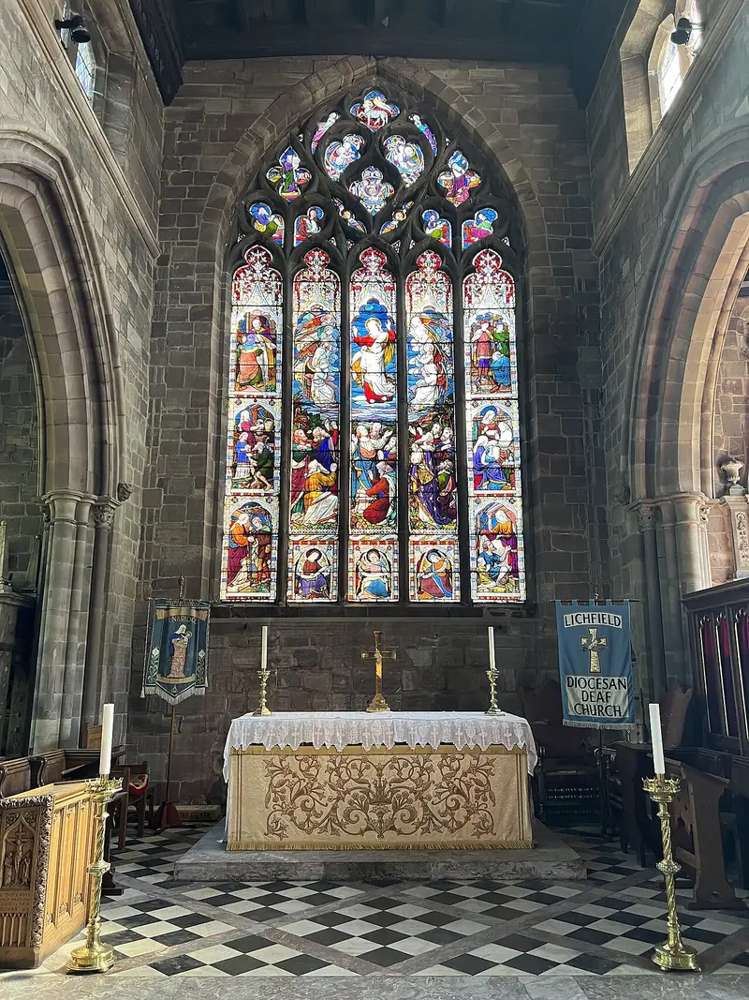
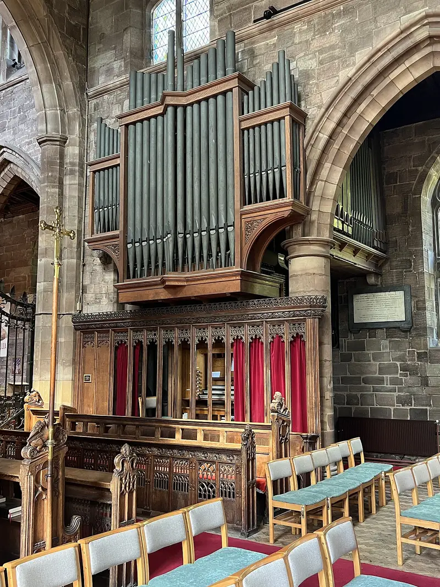
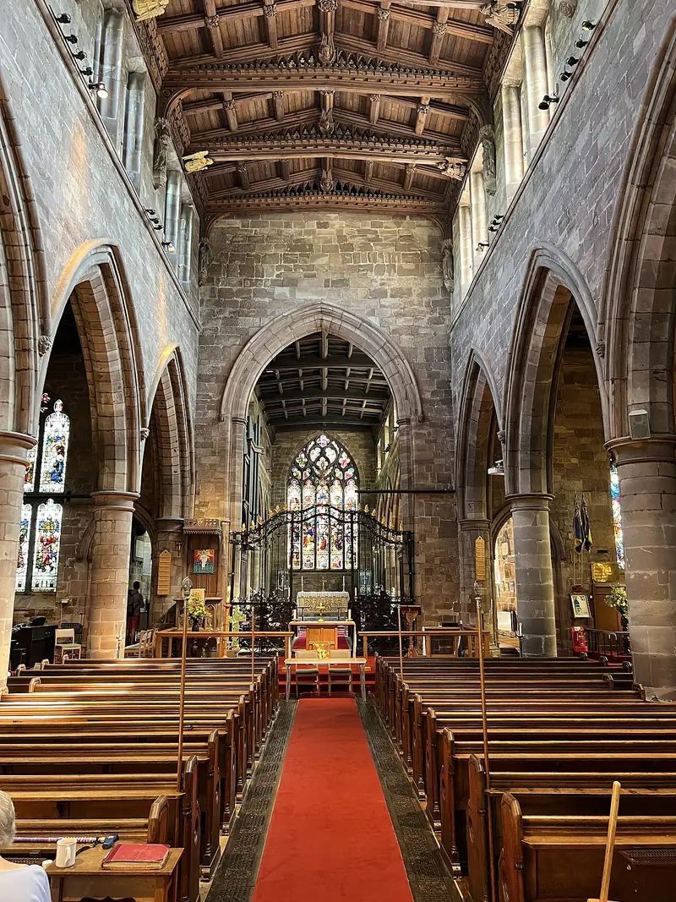

St Michael and All Angels
Advent and Christmas at St Michael's
A happy Christmas from St Michael's
Since 1226
The present church has been standing for about 800 years.

Life at St Michael's
Find a grave
Search the 3,576 people recorded in St Michael's churchyard.

Your first Sunday
Holy Communion at 10:30, usually over by 12, with the organ and a mix of traditional and modern hymns.
Sit wherever you like and follow the words on the screens. Children are welcome.
The third Sunday of the month is different, so check the parish Facebook page that week.
More about SundaysVisit
Church Road, Penkridge, Stafford ST19 5AWOn St Michael's Square in the centre of Penkridge, a short walk from the railway station.
Church Road, Penkridge ST19 5AW
Open in Google Maps